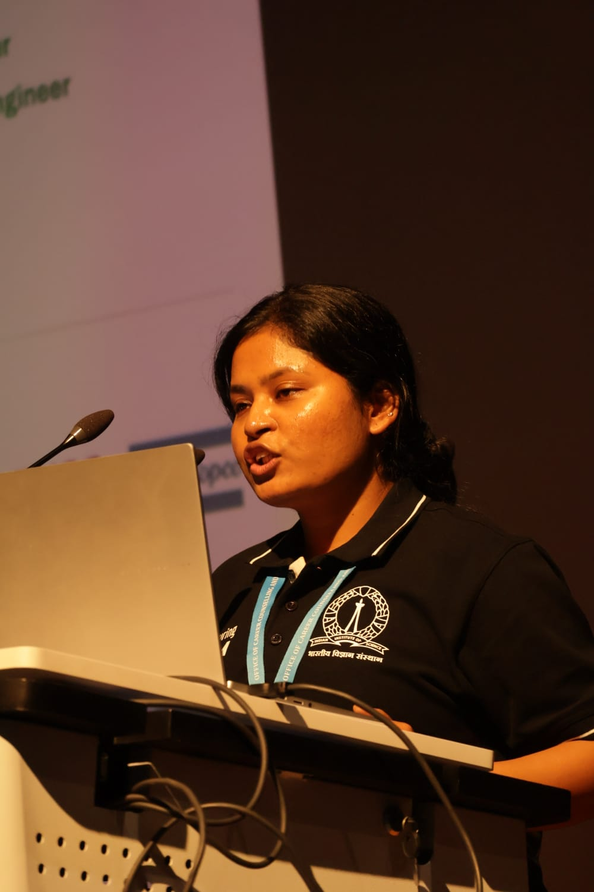

Building intelligence into machines from transformer-scale vision models down to twelve-class activity recognition running on a microcontroller.
Working at the Robotics Innovations Lab (RIL) under Prof. Abhra Roy Chowdhury.

Eleven postgraduate courses on a scrolling timeline. Open one for its assignments.
→Three peer-reviewed papers.
→Every claim, backed.
→Ripples’26, Tech Japan & beyond.
→Read it, then take it.
↓Twelve activities — eating, pick-and-place, jogging, cycling — classified by a model small enough to live inside a microcontroller. No cloud, no round trip.